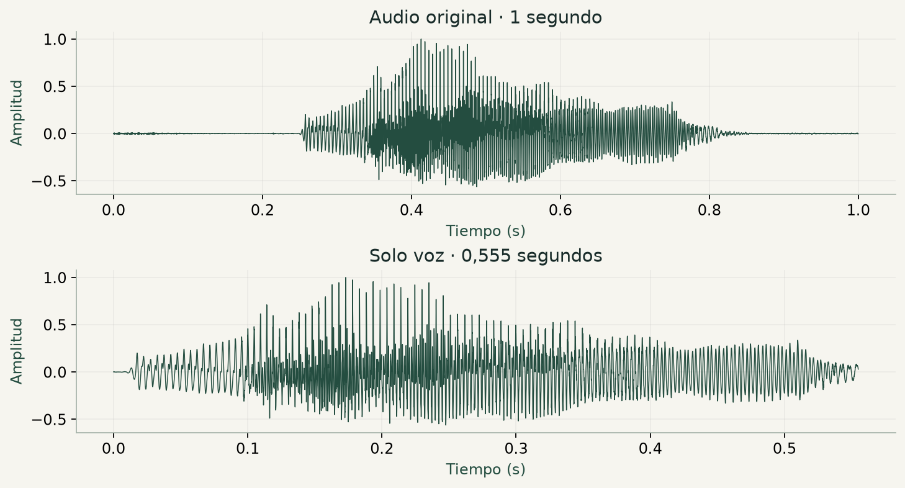
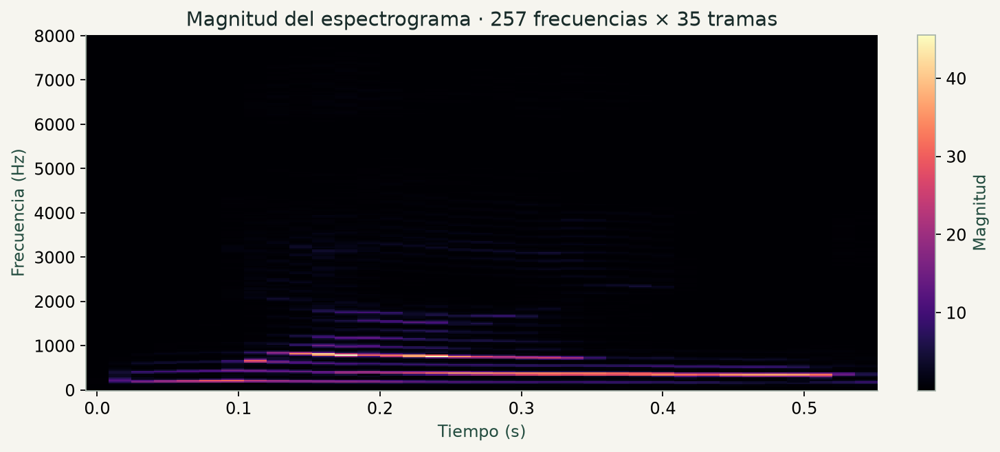
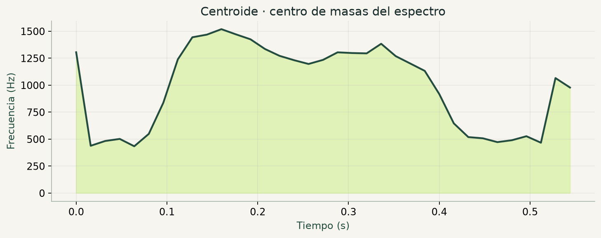
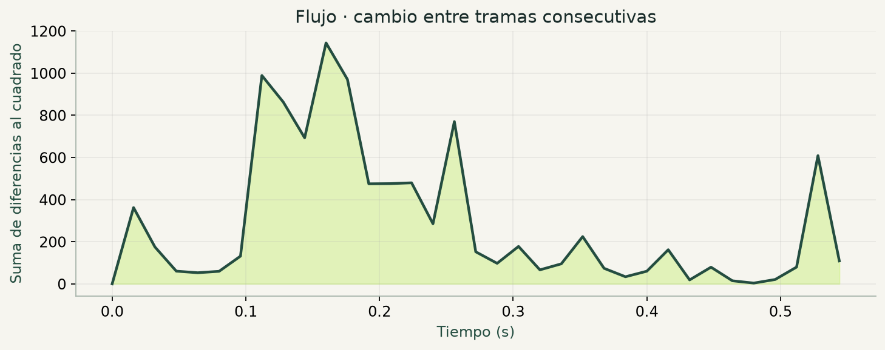
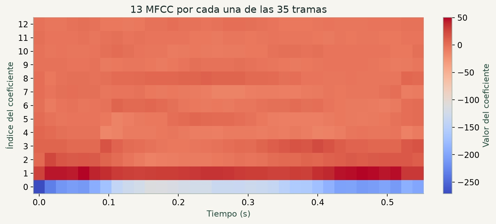

PRÁCTICA 4 · CARACTERÍSTICAS DE LA VOZ
Una palabra.
85 números.
¿Cómo le contamos a una red neuronal cómo suena un «nueve»? Convertimos una grabación en un resumen de sus características.
01 / PREPARACIÓN
Quedarnos con lo que se dice.
Los silencios también generan tramas. Si los dejamos, las medias describirán en parte la espera antes y después de hablar. Recuperamos el detector de voz de la práctica anterior.
LEER la grabación y su frecuencia de muestreo
DETECTAR las muestras que contienen voz
CONSERVAR únicamente esas muestras
CREAR un eje de tiempo para el fragmento resultante
02 / REPRESENTACIÓN
Espectrograma lineal
La voz cambia mientras pronunciamos la palabra. La STFT aplica una FFT a ventanas cortas: cada columna cuenta qué frecuencias aparecen en un instante.

Una matriz para calcular las features
0 features directasLas 257 frecuencias y las 35 tramas son dimensiones intermedias. No copiamos sus 8 995 valores al vector final.
señal de voz
frecuencias × tramas
espectro lineal y bandas Mel
03 / EJERCICIO 1
Centroide espectral
Imagina que cada frecuencia lleva un peso igual a su magnitud. El centroide es el punto de equilibrio: una media de frecuencias ponderada por el espectro. Se relaciona con el brillo del sonido; no es la frecuencia fundamental.
Para una trama fija, Mk es su magnitud en la frecuencia fk: sumamos los 257 productos frecuencia × magnitud y dividimos entre la suma de las 257 magnitudes.
S[k,l] es la magnitud del espectro; f[k], la frecuencia de la fila k; l, la trama.
PARA CADA trama:
MULTIPLICAR cada frecuencia por su magnitud
SUMAR todos los productos
DIVIDIR entre la suma de las magnitudes
GUARDAR el centroide de esa tramaEl cálculo se repite de forma independiente en cada columna. Primero se suman las frecuencias ponderadas por su magnitud y después se divide por el peso total. Así, las 257 frecuencias se convierten en un centroide por trama: 35 valores en este ejemplo.

Del centroide temporal a una feature
1 de 85Calculamos 35 centroides, uno por trama. De esa curva conservamos únicamente su media temporal: posición 80 del vector (índices desde 0).
uno por trama
resumimos toda la curva
posición 80
04 / EJERCICIO 2
¿Cuánto ha cambiado el sonido?
El centroide describe una trama. El flujo compara dos tramas consecutivas: resta sus magnitudes, eleva las diferencias al cuadrado y suma todas las frecuencias.
Mk,l es la magnitud de la frecuencia k en la trama actual, y Mk,l−1, en la anterior. Restamos las magnitudes de cada una de las 257 frecuencias, elevamos cada diferencia al cuadrado y sumamos los 257 resultados. No dividimos ni aplicamos raíz cuadrada.
Para l ≥ 1; en la primera trama, flux[0] = 0. S representa la magnitud, como en la fórmula del ejercicio.
ASIGNAR cero al flujo de la primera trama
PARA CADA trama a partir de la segunda:
RESTAR su espectro de magnitud y el anterior
ELEVAR cada diferencia al cuadrado
SUMAR los resultados de todas las frecuenciasEmparejamos cada columna con la anterior. El cuadrado evita que los cambios positivos y negativos se cancelen. El flujo de la primera trama se fija en cero porque no tiene una trama anterior.

Del flujo temporal a dos features
2 de 85De los 35 valores de flujo conservamos la media y la desviación típica. Los máximos y mínimos del flujo no se incluyen.
primer valor = 0
dos resúmenes del tiempo
posiciones 78 y 79
05 / OTRAS CARACTERÍSTICAS
Otras características
| Característica | Pregunta que responde |
|---|---|
| Spread | ¿Cuánto se dispersan las frecuencias alrededor del centroide? Es una desviación ponderada, en Hz. |
| Skewness | ¿Hacia qué lado se extiende la distribución? Usa el tercer momento normalizado. |
| Kurtosis | ¿Cómo pesan las colas y las concentraciones? Usa el cuarto momento normalizado, sin restar 3. |
| Rolloff (85 %) | ¿Hasta qué frecuencia se acumula el 85 % del peso espectral? Aquí acumulamos magnitud espectral. |
Centroide y spread se reutilizan al calcular skewness y kurtosis: así evitamos repetir operaciones.
Cuatro curvas más, cuatro medias
4 de 85Cada característica tiene 35 valores temporales. De cada una conservamos solo su media. Junto al centroide forman las 5 features espectrales finales.
En este apartado conservamos 4 componentes nuevos, uno por cada media. El centroide (#80) ya se ha contado en el apartado 03 y las 2 features del flujo, en el apartado 04.
06 / EJERCICIO 3
Mel Frequency Cepstral Coeficients
Las 257 frecuencias contienen muchos detalles. Agrupamos su magnitud en 40 bandas Mel, aplicamos logaritmo y usamos una DCT para obtener una descripción compacta de la envolvente espectral.
AGRUPAR la magnitud en 40 bandas Mel
PARA CADA trama:
APLICAR el logaritmo en base 10 a sus bandas
CALCULAR la transformada de coseno (DCT)
CONSERVAR los primeros 13 coeficientesResultado: 13 coeficientes × 35 tramas. Son 13 coeficientes por trama, todavía no 13 valores para todo el audio.

13 coeficientes, cuatro resúmenes de cada uno
52 de 85Cada una de las 13 filas MFCC contiene 35 valores temporales. Conservamos la media, desviación típica, máximo y mínimo de cada fila: 13 × 4 = 52.
evolución de cada MFCC
resumimos el tiempo
posiciones 0–51
Cada casilla representa un coeficiente (0–12). Cada fila de casillas es un bloque distinto del vector final. Se conservan los 13 valores de cada bloque.
Delta MFCC
Los MFCC describen cómo suena cada trama. Los deltas nos dicen cuánto está cambiando cada MFCC con el tiempo: si aumenta, disminuye o se mantiene parecido entre tramas cercanas.
Este cálculo lo hace una función que ya incluye librosa; no tenemos que definirla nosotros. Le damos la matriz de MFCC y nos devuelve otra del mismo tamaño: 13 filas × 35 tramas, con los cambios estimados.
Los deltas aportan otros 26 valores
26 de 85Hay 13 curvas delta, cada una con 35 valores. De cada curva guardamos media y desviación típica: 13 × 2 = 26. No guardamos máximos ni mínimos de los deltas.
cambio temporal de los MFCC
media y desviación
posiciones 52–77
En todo el apartado 06: 52 MFCC + 26 deltas = 78 features finales.
07 / RESULTADO
De muchas tramas a un solo vector.
Una red fully connected necesita una entrada de tamaño fijo. Resumimos el eje temporal con estadísticas: las grabaciones pueden tener distinto número de tramas, pero siempre obtenemos los mismos 85 componentes.
Estas son las 85 casillas que conservamos
Cada casilla es una componente del vector final. Pulsa una para ver qué resume y su valor calculado con el WAV. Los números de las casillas son posiciones, no amplitudes.
Selecciona una casilla para explorar su contenido.